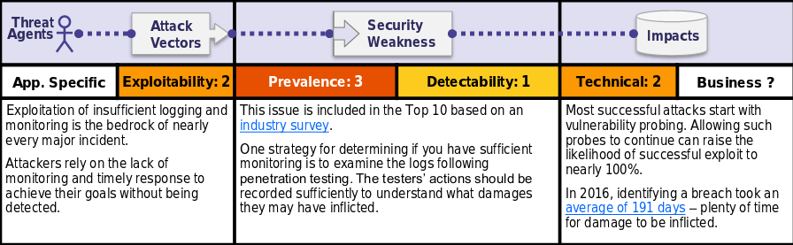

Is the Application Vulnerable?
Insufficient logging, detection, monitoring and active response occurs any time:
•Auditable events, such as logins, failed logins, and high-value transactions are not logged.
•Warnings and errors generate no, inadequate, or unclear log messages.•Logs of applications and APIs are not monitored for suspicious activity.•Logs are only stored locally.
•Appropriate alerting thresholds and response escalation processes are not in place or effective.
•Penetration testing and scans by DASTtools (such as OWASP ZAP) do not trigger alerts.
•The application is unable to detect, escalate, or alert for active attacks in real time or near real time.
You are vulnerable to information leakage if you make logging and alerting events visible to a user or an attacker (see A3:2017-Sensitive Information Exposure).
How to Prevent
As per the risk of the data stored or processed by the application:
•Ensure all login, access control failures, and server-side input validation failures can be logged with sufficient user context to identify suspicious or malicious accounts, and held for sufficient time to allow delayed forensic analysis.
•Ensure that logs are generated in a format that can be easily consumed by a centralized log management solutions.
•Ensure high-value transactions have an audit trail with integrity controls to prevent tampering or deletion, such as append-only database tables or similar.
•Establish effective monitoring and alerting such that suspicious activities are detected and responded to in a timely fashion.
•Establish or adopt an incident response and recovery plan, such asNIST 800-61 rev 2or later.
There are commercial and open source application protection frameworks such asOWASP AppSensor, web application firewalls such asModSecuritywith the OWASP ModSecurityCore Rule Set, and log correlation software with custom dashboards and alerting.
Example Attack Scenarios
Scenario #1: An open source project forum software run by a small team was hacked using a flaw in its software. The attackers managed to wipe out the internal source code repository containing the next version, and all of the forum contents. Although source could be recovered, the lack of monitoring, logging or alerting led to a far worse breach. The forum software project is no longer active as a result of this issue.
Scenario #2: An attacker uses scans for users using a common password. They can take over all accounts using this password. For all other users, this scan leaves only one false login behind. After some days, this may be repeated with a different password.
Scenario #3: A major US retailer reportedly had an internal malware analysis sandbox analyzing attachments. The sandbox software had detected potentially unwanted software, but no one responded to this detection. The sandbox had been producing warnings for some time before the breach was detected due to fraudulent card transactions by an external bank.